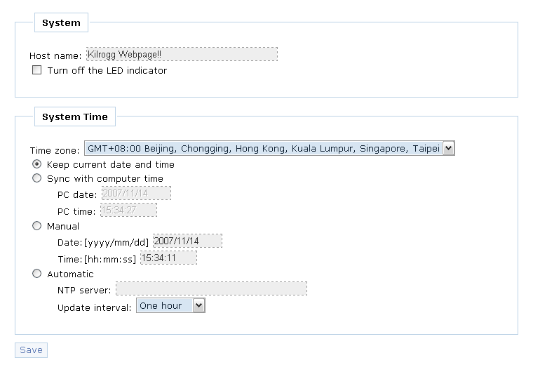

The system page includes two field, system and system time
System
- Host name (text input)
- Turn off the LED indicator (check box)
System time
- Time zone (select list)
- four adjust time method:
- Keep current date and time (select button)
- Sync with computer time (select button)
- PC date (display only)
- PC time (display only)
- Manual (select button)
- Date:[yy/mm/dd] (text input)
- Time:[hh:mm:ss] (text input)
- Automatic (select button)
- NTP server (text input)
- Update interval: One hour/One day/One Week/One Month (select list)
Sample view
